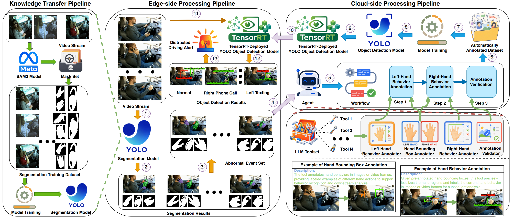

In-vehicle driver monitoring is an important component of intelligent transportation systems, where distracted driving detection plays a key role in improving driving safety. Existing methods usually rely on supervised training with manually annotated datasets. However, continuous driving videos are massive and highly redundant, while distracted behaviors are sparse, fine-grained, and dependent on hand-object interactions. This makes large-scale manual annotation costly and limits the deployment of lightweight edge detectors. Although Vision Language Models (VLMs) can exploit unlabeled visual data, directly applying them to online in-vehicle inference is impractical due to high latency and computational cost. To address these challenges, we propose DataDet, a cloud-edge collaborative framework that enables accurate and efficient distracted driving detection without relying on manually annotated training data. On the edge side, DataDet distills task-relevant segmentation knowledge from a powerful segmentation model into a lightweight model, enabling it to mine informative high-risk events from continuous video streams and reduce redundant uploads. On the cloud side, an agent-based workflow performs structured hand-centric annotation and verification to generate reliable pseudo-labels. The resulting pseudo-labeled data are used to train a lightweight detector and redeploy it to the edge, thereby enabling efficient distracted driving recognition without manually annotated datasets. Experiments on RGB and IR driving data validate the effectiveness of DataDet in mining high-value events, generating reliable pseudo labels, and training lightweight edge detectors. The results further show that DataDet achieves accurate real-time distracted driving detection under limited annotation, bandwidth, and onboard computation resources.
